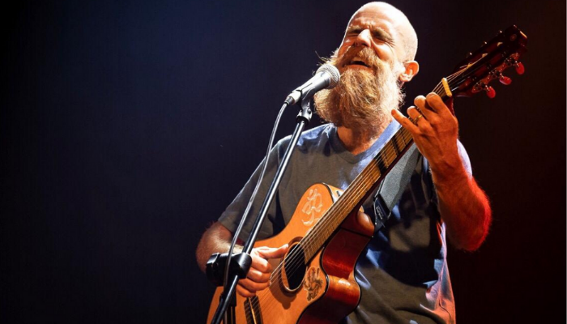
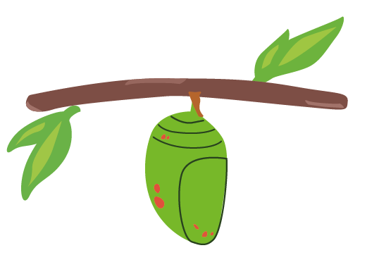

Diego Rossberg
Trayectoria y Proceso
Diego Rossberg es músico, compositor, guitarrista y cantante argentino radicado en Uruguay desde el año 2000. Fue vocalista y principal compositor de Cuatro Pesos de Propina, banda con la que desarrolló una importante rayectoria en la escena musical uruguaya y regional.
Desde 2017 desarrolla su carrera como solista, explorando géneros como el rock, reggae, pop y ska. Entre sus trabajos se destacan Solo es un juego (2017) y Eres el fuego (2019). También es autor de canciones reconocidas como “Glu Glu” y “Mi revolución”, y ha participado en trabajos de artistas como No Te Va Gustar y Tabaré Cardozo.
CONOCÉ MÁS COLABORACIONES ›